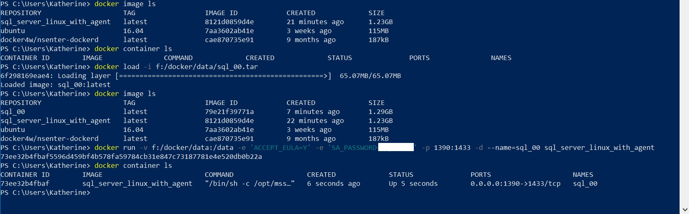

[sql_linux_on_docker]I use Docker to deploy virtual environments. Container is the correct term for what Docker does, but it is a virtual environment, with a lower case "v". I use Linux containers and run mssql-server-linux rather than the Windows containers running SQL for Windows because I do not have to deal with client licensing for every single container I spin up. That may seem petty, and perhaps it is. For me it is just easier. I am running development instances of SQL Server, so I do not have to worry about SQL Server licensing. This prevents licensing issues with the client OS. Additionally, installing mssql-server-linux in a Linux container is fast! This presentation focuses on:
Linux is cool, and it is fast. Step through the process outlined here and be amazed at how fast and easy it is to create a new build of SQL Server with additional features (SQL Server Agent in this case). I have always been fascinated by Linux. Unfortunately, the time to use it as a desktop was lost when no one managed to build a standard desktop from the literally dozens of competing desktops. Besides, I make a living on Windows and the majority of my applications and code run on Windows. Perhaps that will change in the future, but for now I work on Windows boxes. That does not prevent me from taking advantage of tools like Docker running mssql-server-linux however. You try to be yourself, do only what you've always done and like to do, and right away, you're tagged as an oddball. James Dean. |
[install_docker]I am not an expert or even an experienced user with Docker. I am a casual user. This presentation is meant to be a simple process allowing other Windows/SQL Server users to get mssql-server-linux up and running easily in Docker. It also is a way for me to document what I have done so that, a few weeks or months from now I can refer to my notes. There is a lot of information and support online for Docker. See the Reference list below. Unfortunately for the new user, such as myself, there is also a lot of information for versions of Docker going back several years and on multiple platforms and for multiple products. This process is based on the versions listed here and specifically for Windows 10 Professional with the intent of using mssql-server-linux. Download and install Docker CE. Towards the end of the install process you might get an error, a run time error I believe, with an option to quit or continue. I have always selected continue and things seem to work fine afterwards. I have not thought to capture an image of that, yet. Restart your computer. I have seen nothing in the documentation that says you have to restart your computer, but I have seen a few other bug reports from people who, like me, have found that following the install you have to restart your computer before you will be able to access Docker from within PowerShell. Just do it. |
[connect_to_instance]Connect to the SQL Server Instance using SSMS. The connection string is; <host_name>\<container_name>,<port_number> You created these credentials in [start_a_sql_container] earlier. [inspect_instance_in_ssms]The instance is now available in SSMS for use. You can use it just as you would any SQL Server instance. Note the @@version. Microsoft SQL Server 2017 (RTM-CU9-GDR) (KB4293805) - 14.0.3035.2 (X64) Jul 6 2018 18:24:36 Copyright (C) 2017 Microsoft Corporation Developer Edition (64-bit) on Linux (Ubuntu 16.04.5 LTS) |
[commit_and_load_a_container]You will probably want to save a container after you've set it up. You create and load stored procedures, functions, tables, data, etc. You can of course just script everything out, save it, and rerun it every time you restart, but saving off and sharing images makes more sense. First you have to commit your container to create an image of it. docker commit sql_01 sql_linux_with_agent__mapped_d_drive Then you save your image to a tar file. docker save -o f:/docker/data/sql_00.tar sql_00 |
|

You can then copy the tar file to another computer with Docker and load it there (or load it back into your instance of Docker later on). docker load -i f:/docker/data/sql_00.tar |
|
The saved tar file (container/image) |
|
Stop the container. Notice that a stopped container still exists.
|

[docker__connection_attempt_failed]Bang! |
[reference]TODO |